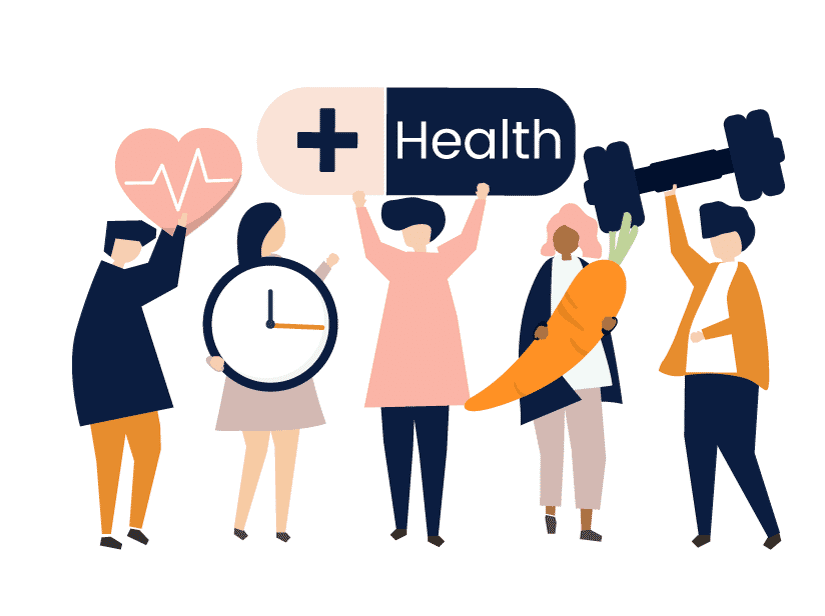

Bienvenido a Salud y Bienestar

July 23, 2019 | 3 comments
En la era digital actual, los estudiantes de ciencias de la computación se enfrentan a desafíos únicos relacionados con su salud física y psicológica. En respuesta a esta necesidad, esta plataforma ha sido creada como una solución integral para abordar las preocupaciones de salud de los estudiantes de ciencias de la computación y ayudarles a mantener un equilibrio saludable entre la vida académica y el bienestar personal.
Nuestro Objetivo
Reconocemos la importancia de implementar estrategias efectivas para gestionar el bienestar físico y mental de los estudiantes de ciencias de la computación. Nuestra misión es proporcionar información detallada, recursos y un espacio dedicado que aborde no solo los aspectos físicos, sino también los desafíos psicológicos que enfrentan los estudiantes.
CONTINUA LEYENDO
Habitos alimentarios para una vida saludable
Todos sabemos que una dieta equilibrada y una actividad física regular son la base de una rutina sana. Sin embargo, uno debe ser constante para adquirir e interiorizar estos hábitos. La falta de motivación y de tiempo son los dos factores principales contra los que muchos debemos luchar.
CONTINUE LEYENDO

Oct 10, 2023 | Articulo
Protocolo NSDR
En esta meditación de 10 minutos, el neurocientífico de Stanford Andrew Huberman lo guía a través de un protocolo de descanso profundo sin dormir (NSDR) para mejorar el proceso de aprendizaje al reducir la fatiga diurna y mejorar la concentración, ademas de mejorar enormemente su sueño, estado de ánimo y promover la Neuroplasticidad.
VER VIDEO

Oct 1, 2023 | Video
Protocolo de acondicionamiento fisico
Este protocolo se centra en la salud, la longevidad y el equilibrio estético cada día de la semana. Está diseñado para modificarse para satisfacer sus necesidades individuales y mejorar la salud inmediata y a largo plazo.
CONTINUE LEYENDO

Oct 10, 2023 | Articulo